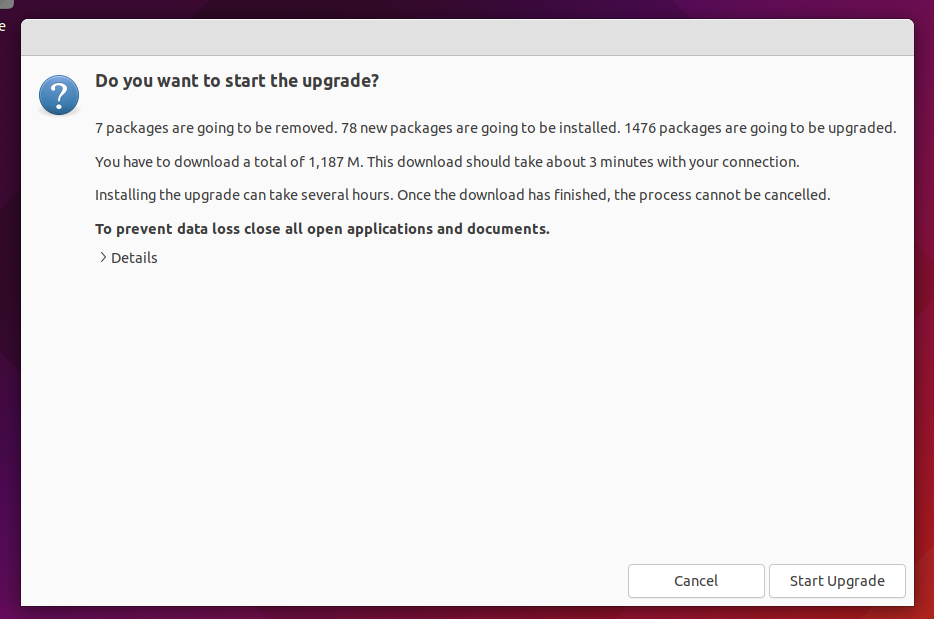

Jellyfish
Every two years the time comes to upgrade my Ubuntu. I know that I’ll get Ubuntu’s most stable updates for the packages on my system, and I also know that the upgrade will break some of my packages and I’ll have to spend a couple of hours fixing them.
This year the upgrade is from 20.04 (Focal Fossa) to 22.04 (Jammy Jellyfish). A few days ago all the stars aligned and I decided that “[i]t’s time, Butch”. I rely on the command line to do upgrades, but when I, whilst performing due diligence, checked out Ubuntu’s official website I discovered that there was no mention at all of the command line - the tutorial was exclusively on the GUI client. I find this odd, but my guess is that it may be part of a push by Canonical to present Ubuntu to the masses as a mainstream OS. (Linux in general had always, with good reason, been more attractive to the techie/developer crowd than to average users.) I decided to put on my “average user” hat and use the GUI client, but it turned out that this year wasn’t meant to be the “Year of Linux on the Desktop”.
I began by backing up my data and launching the GUI client. Then I clicked through the screens until I got to this one (image from online tutorial):

When I clicked on the “Details” tab a text box containing the details appeared and the window expanded to accommodate it. The problem was that the expansion happened vertically in both directions, something which resulted in the title bar, with its controls for resizing/minimizing/closing/moving the window, disappearing beyond the top edge of the screen and the “Cancel” and “Start Upgrade” buttons below disappearing beneath the bottom edge. Clicking on the Details tab again doesn’t help because it makes the text box disappear without returning the window to its original state.
This means that I’ve just lost all means of interacting with the window using the mouse, and if I opt to use the keyboard instead I’ll be working blind, with no way of verifying that the focus generated by the tab key was on the correct button. My setup is a VirtualBox virtual machine with the screen scaled to 100%, a typical platform with a typical configuration. A UI design failure of this type is unacceptable under any circumstances, but what makes this particular one egregious is that it occurs in a crucial application like the OS upgrade client, where pressing the wrong button can completely ruin your day.
The only good thing about the situation is that it happened at an early stage in the process, where cancellation was still a viable option. I pressed the tab key once, thereby (hopefully) setting the focus on “Cancel”, and pressed “Enter”, which resulted in the cancellation of the upgrade process.
I sighed, put my techie hat back on, and returned to the good old command line.
The command line upgrade process is simple and painless. But regardless of the upgrade method used, there will always be broken packages afterwards that have to be discovered and fixed. This time I discovered that the upgrade had broken crucial packages all along my web stack, namely Apache, MySQL, and phpMyAdmin. Moreover, I discovered that Emacs had been completely removed from the system.
I won’t go into the details of how I spent the couple of hours after the upgrade, but here’s a summary:
- Apache broke because when Ubuntu upgraded PHP from 7.4 to 8.1 Apache’s configuration files weren’t updated to point to the new version of PHP.
- phpMyAdmin and Emacs were both removed. I’m not sure why but it could have something to do with each of them having been originally installed as part of a bundle (LAMP in the case of phpMyAdmin and Git in the case of Emacs) instead of through the standard installation process. If this hypothesis is correct then reinstalling the packages individually should resolve the issue.
- MySQL is a package that breaks on every upgrade and I have to admit that I bear part of the responsibility for that. Shortly after installing it for the first time I did a lot of half-ignorant mucking about with the configuration files to get it to work, and it became a tradition for every OS upgrade afterwards to trip over one of the changes I made at the time. Fortunately, the changes are easy to spot and revert with the aid of the error messages.
Based on this year’s experience, here are a few ways I can see of improving the upgrade process:
- Dependency management is in desperate need of improvement. If an old version of a package is replaced with a new one the configuration files in dependent packages must be automatically updated to reflect that fact. Conversely, if a dependent package is updated, the packages it depends on must be checked for compatibility with the dependent package’s new version. All of this is obviously the OS’s responsibility, not the user’s.
- The upgrade tool needs to become better at updating software that’s been installed as part of a bundle. If not, then the user installing the bundle should be warned that he needs to reinstall the packages individually in order for the upgrade tool (or package manager) to properly deal with them.
- Someone in the UI development team needs a kick in the ass.
Posted: 31-08-2022
Tags: linux